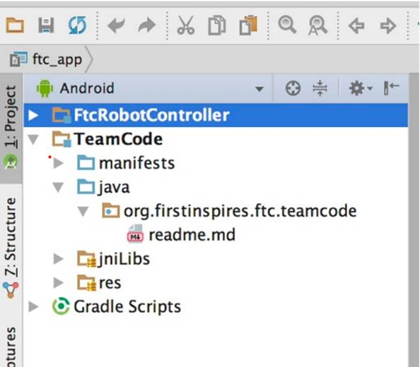
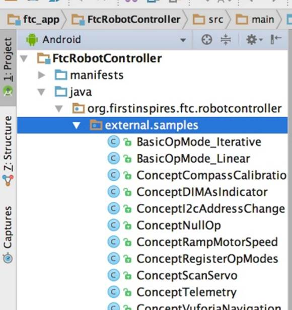
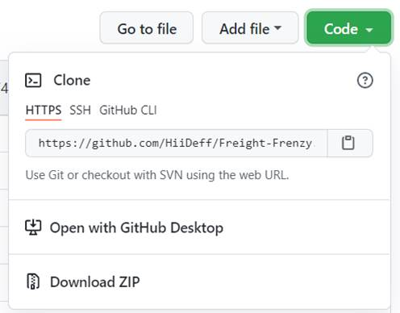
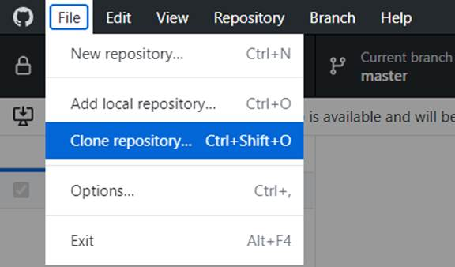
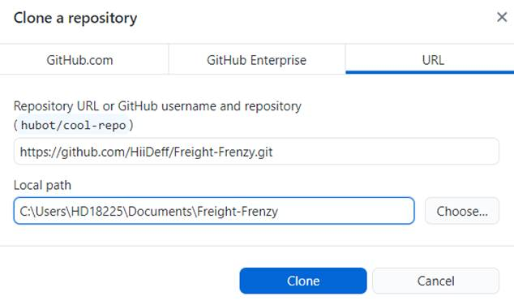

FIRST FTC Programming Guide for Beginners
By FTC Team 18225 - High Definition
Contents
2.0 FTC Hardware - Control Systems
4.0 Software Environment Setup..
Step 1: Download and Install Android Studio
Step 3: Connect to the Control Hub
Step 4: Set Up Driver Station Phone
5.0 Programming in Android Studio
6.0 Programming with Hardwares.
7.0 Source Code Version Control
Set Up a Team GitHub Repository.
Linear OpMode vs Iterative OpMode.
Clone FTC SDK to your local disk.
1.0 Overview
This guide is intended for readers who are new to FTC programming but have basic understanding of Java language and the source code version control system such as web-based code repository - GitHub.
FTC programming covers lots of concepts that are specific to robotics and not like regular programming. In this guide we will cover some of these concepts to help beginners understand how FTC programs work and provide step-by-step guides to get them up to speed on FTC programming. Here are the topics we are going to cover:
· FTC hardware introduction
· FTC software introduction
· Software development environments setup
· Working with hardware
· Version control
2.0 FTC Hardware - Control Systems
Before
starting FTC programming, it is necessary to understand what hardware the code
is interacting with. As shown in the figure. 1, FTC control system consists of
two subsystems: Control Hub and Driver Station.

Figure. 1: FTC Hardwares (Control Systems)
Control Hub
The REV Robotics Control Hub is placed on the robot. It has two functionalities:
· The Control Hub has many ports that can connect to different motors, servos, and sensors.
· It also serves as a robot controller. The Robot Controller app, an Android app, runs on the Control Hub. The controller app reads signals from various sensors and sets power or speed to the motors and servos.
Driver Station
The driver station, a separate Android phone, physically connects to gamepads and wirelessly connects to the Control Hub. Through the wireless connection, Driver Station sends gamepad commands to the Control Hub, and receives telemetry information back and displays them on the Driver Station phone screen.
3.0 FTC Software
There are two pieces of software used to control an FTC competition robot including Driver Station App and Robot Controller App.

Figure. 2: FTC Software Overview
Driver Station App
Driver Station app is an Android app provided by FTC and installed on the Driver Station phone. Drivers interact with the robot through the Driver Station app. The app is available from Google Play store. No change is needed for the Driver Station app.
Robot Controller App
Robot Controller app is an Android app that is also provided by FTC and can be downloaded and built from FTC Software Development Kit (SDK) hosted on GitHub. Changes to the robot control app are necessary to add team-specific control logic by implementing OpMode classes.
OpMode is short for
Operational Mode. An OpMode is a class inheriting from LinearOpMode to implement the control
logic for one control strategy used either in the 30-second autonomous or in
the 2-minute manual driving duration. A team can develop as many OpModes as
needed to apply different strategies to handle different situations a team
might face during the competition time.
An OpMode performs
these three basic operations:
· Read input from various devices connected or gamepad
· Do some type of computation based on the input
· Send commands to motors and servos to move the robot or other subsystems
There are two different types of OpModes used during the course of the two and a half minutes competition.
· Autonomous mode: the robot operates by itself through the preprogrammed commands (30 seconds). In this mode, the control logic is fully automatic. Code example for this mode:
|
// @Autonomous annotation indicates this OpMode will run in the autonomous mode @Autonomous(name = "Example Autonomous Linear OpMode", group = "Linear OpMode") // @Disabled: this is to disable or enable the opmode public class AutonomousOpMode extends LinearOpMode { @Override public void runOpMode() throws InterruptedException { // Initialization code goes here. // Gets the all four motors DcMotor leftFrontDrive = hardwareMap.get(DcMotor.class, "leftFront"); DcMotor leftRearDrive = hardwareMap.get(DcMotor.class, "leftRear"); DcMotor rightFrontDrive = hardwareMap.get(DcMotor.class, "rightFront");
DcMotor rightRearDrive = hardwareMap.get(DcMotor.class, "rightRear"); // Most robots need the motor on one side to be reversed to drive forward leftFrontDrive.setDirection(DcMotor.Direction.FORWARD); leftRearDrive.setDirection(DcMotor.Direction.FORWARD); rightFrontDrive.setDirection(DcMotor.Direction.REVERSE); rightRearDrive.setDirection(DcMotor.Direction.REVERSE);
// Wait for the game to start (driver presses PLAY) waitForStart();
// The autonomous program will drive the robot forward for 2 seconds with // power set to 0.5 and then stop. ElapsedTime runtime = new ElapsedTime(); runtime.reset(); while (opModeIsActive()) { if (runtime.time() < 2.0) { leftFrontDrive.setPower(0.5); leftRearDrive.setPower(0.5); rightFrontDrive.setPower(0.5); rightRearDrive.setPower(0.5); } else { break; } } } } |
· TeleOp mode: the robot is manually controlled through the inputs from the gamepad (2 minutes). The code may incorporate autonomous aided control logic to enhance the robot’s performance and efficiency. Code example for this mode:
|
// @TeleOp annotation indicates this OpMode will run in the TeleOp mode @TeleOp(name="Example TeleOp Linear OpMode", group="Linear Opmode") // @Disabled: this is to disable or enable the opmode public class ExampleTeleOp extends LinearOpMode {
@Override public void runOpMode() { // Initialization code goes here. // Gets the all four motors DcMotor leftFrontDrive = hardwareMap.get(DcMotor.class, "leftFront"); DcMotor leftRearDrive = hardwareMap.get(DcMotor.class, "leftRear"); DcMotor rightFrontDrive = hardwareMap.get(DcMotor.class, "rightFront");
DcMotor rightRearDrive = hardwareMap.get(DcMotor.class, "rightRear"); // Most robots need the motor on one side to be reversed to drive forward leftFrontDrive.setDirection(DcMotor.Direction.FORWARD); leftRearDrive.setDirection(DcMotor.Direction.FORWARD); rightFrontDrive.setDirection(DcMotor.Direction.REVERSE); rightRearDrive.setDirection(DcMotor.Direction.REVERSE); // Wait for the game to start (driver presses PLAY) waitForStart();
// run until driver presses STOP button while (opModeIsActive()) { // Drive the robot forward or backward based on the left joystick's // y value double drive = gamepad1.left_stick_y; leftFrontDrive.setPower(drive); leftRearDrive.setPower(drive); rightFrontDrive.setPower(drive); rightRearDrive.setPower(drive); } } } |
4.0 Software Environment Setup
Step 1: Download and Install
Android Studio
As mentioned in the instruction section, FTC software program is actually an Android app running on the Android operating system. Android Studio is an Integrated Development Environment (IDE) used for developing Android Apps. Download Android Studio and install it on your computer.
Note: Java is the programming language for Android and it will be installed as part of the Android installation package.
Step 2: Set Up FTC SDK
FTC SDK has many useful built-in libraries used for interacting with various devices such as commonly used motors, servos and sensors. Most importantly, it contains the robot controller main app together with the OpMode programs that you are going to write to control the robot.
· Clone FTC SDK to your local disk using one of the tools listed in the version controls section. Specifically, if you are using GitHub Desktop app, you can follow the guide in Appendix B.
· Import FTC SDK into Android Studio by following these two steps:
· Go to Android Studios and click “Open an existing project.”

· Paste the file location of where you just cloned the repository

· Click on ‘Open’ button
Note: more info about using FTC
SDK can be found in FTC SDK readme page.
Step 3: Connect to the Control Hub
· Power on the control hub and wait for ~5 seconds until the hub light turns green
· On your computer, click on the WIFI selector to switch the WIFI to the controller hub WIFI with a name like ‘FTC-xxx’ and the password is ‘password’. You can change the WIFI network name and password by opening "192.168.43.1:8080" in a browser
· Deploy code wirelessly by running this adb command: adb connect 192.168.43.1:5555
Note: more details about using the control hub can be found here.
Step 4: Set Up Driver Station Phone
· Install the FTC Driver Station app on an Android (Driver Station) phone from Play Store
· Connect Driver Station phone to Control Hub by following this guide
· Configure the robot in the Driver Station app by following this tutorial
5.0 Programming in Android Studio
Once the FTC SDK is
imported into Android Studio, you should see a TeamCode folder in the project
tree. When writing new OpModes, ‘TeamCode’ folder is where the new code will be
stored

To start, you can copy any existing example OpMode from the ‘external.samples’ folder under ‘FtcRobotController’ folder and then make changes on top of it

A typical OpMode class has the following code structure. The custom code for robot control logic will be added to the initialization section and the three sections inside the WHILE loop.
|
@Autonomous(name = "Example Autonomous Linear OpMode", group = "Leaner Opmode") // @Disabled: this is to disable or enable the opmode public class AutonomousOpMode extends LinearOpMode {
@Override public void runOpMode() throws InterruptedException { // Initializing motors, sensors and servos // Your initialization code goes here
// Wait for the game to start (driver presses PLAY) waitForStart();
// Any code that needs to perform once after pressing START goes here
while (opModeIsActive()) { // get inputs from sensors or gamepad
// do some computation
// set output to motors and servos } } } |
To program with various hardwares, continue to the next section. More details for Android Programming can be found on FTC resource page: Comprehensive Android Programming Guide
6.0 Programming with Hardwares
An OpMode is either a LinearOpMod or Iterator OpMod (for more details see Appendix A). For either case, the base class contains a HardwareMap and two GamePad objects. The HardwareMap is the object from which you can get the handles for all other devices based on the device type and device name you set in the robot configuration.
Motors
Motors in FTC are used when you need a mechanism which rotates 360 degrees either continuously or on command. A well known use case is the drive base. In this guide, we use Andymark NeveRest Classic 40 GearMotor as an example. This motor equips an onboard encoder which helps in calculating the number of ticks (robot language for inches) the robot traveled.
1. Get the motor object from the HardwareMap
|
DcMotor leftFrontDrive = hardwareMap.get(DcMotor.class, "leftFront"); |
Notes:
· ‘hardwareMap’ is a member variable defined in the base class LinearOpMode which is provided by FTC SDK
· The used motor is a DcMotor. Hence, the first parameter (device type) is DcMotor.class
· “leftFront” is the name we used to name the left front motor in robot configuration. This name is configurable. See this guide for more info on how to configure the robot.
2. Initialize the motor properly
|
leftFrontDrive.setDirection(DcMotor.Direction.FORWARD); |
Notes:
·
This statement
determines if the motor will rotate forward or backward when setting a positive
power. Setting the direction to DcMotor.Direction.REVERSE is necessary for motors
install on the opposite side of the robot
3. Set a power to the motor to start moving the robot
|
leftFrontDrive.setPower(0.5); |
Notes:
· The range for power is [-1, 1]. A positive value makes the motor rotate in the direction that moves the robot forward, and a negative value makes the motor rotate in the direction that moves the robot backward.
Servos
The main difference between servos and motors is that servos can only rotate within a limited angle range less than 360 degrees such as 180 degrees and 270 degrees. Hence, a servo can’t be rotated continuously. In this guide, we assume the servo has the angle range 0-180 degrees.
1. Get the servo object from the HardwareMap
|
Servo armSlider = hardwareMap.get(Servo.class, "armSlider"); |
Notes:
· ‘hardwareMap’ is a member variable defined in the base class LinearOpMode which is provided by FTC SDK
· The used servo is a Servo. Hence, the first parameter (device type) is Servo.class
· “armSlider” is the name we used to name the servo in robot configuration. This name is configurable. See this guide for more info on how to configure the robot.
2. Initialize the servo so that the initial angular position is at 0 degree
|
leftFrontDrive.setPosition(0); |
3. Rotate the servo to the 90 degrees angle
|
leftFrontDrive.setPosition(0.5); |
Sensors
A common sensor used in FTC is the color sensor. The color sensor is useful when you want to rely on color to navigate the robot. For example, the example code below shows you how to stop the robot when it sees the red color.
1. Get the motors and color sensor object from the HardwareMap
|
DcMotor leftWheel = hardwareMap.get(DcMotor.class, "leftWheel"); DcMotor rightWheel = hardwareMap.get(DcMotor.class, "rightWheel"); NormalizedColorSensor colorSensor = hardwareMap.get(NormalizedColorSensor.class, "sensor_color"); |
Notes:
· Any color sensor can be returned as a NormalizedColorSensor.
2. Initialize the motors by setting the right direction
|
leftWheel.setDirection(DcMotor.Direction.FORWARD); rightWheel.setDirection(DcMotor.Direction.REVERSE); |
3. Move the robot until it senses the red color
|
if (colorSensor.getNormalizedColors().red > 0.9 && colorSensor.getNormalizedColors().green < 0.1 && colorSensor.getNormalizedColors().blue < 0.1) { leftFrontDrive.setPosition(0.0); leftFrontDrive.setPosition(0.0); } else { leftFrontDrive.setPosition(1.0); leftFrontDrive.setPosition(1.0); } |
Gamepads
There are two predefined Gamepad objects in LinearOpMod base class: gamepad1 and gamepad2. In this guide, we will demonstrate how to move the left motor when pushing the left stick forward on gamepad1, and how to move the right motor when pushing the right stick forward on the same gamepad.
1. Get the motor objects from the HardwareMap
|
DcMotor leftWheel = hardwareMap.get(DcMotor.class, "leftWheel"); DcMotor rightWheel = hardwareMap.get(DcMotor.class, "rightWheel"); |
2. Set the motor direction
|
leftWheel.setDirection(DcMotor.Direction.FORWARD); rightWheel.setDirection(DcMotor.Direction.REVERSE); |
3. Move the motors based on the joystick’s inputs on the gamepad1
|
leftWheel.setPower(-gamepad1.left_stick_y); rightWheel.setPower(-gamepad1.right_stick_y); |
Notes:
· When pushing the joystick forward, both joysticks (`left_stick_y’ and ‘right_stick_y’) return a negative value. To move the motor forward, we need to negate the value here.
Additional Resources
· Comprehensive Android Programming Guide
· Various FTC programming video tutorials
7.0 Source Code Version Control
Overview
· A version control system allows everybody on the team to work on any file at any time they want. Without it, it would be very difficult to manage having multiple people working on the same document.
· How it works is that you have a master repository, and every member copies that onto their own computer. Once a member is done editing, they upload the changes (push) onto the master repository, and the rest of the team will download those changes (pull).
· A version control system will keep track of all the changes, which makes it very handy as a backup in case something goes wrong, or if you need to reference it for later.
· For this example, we will be using GitHub because it is used by almost everyone in the FTC community and is also widely used throughout the world, although there are still alternatives. More info can be found in the GitHub get-started page.
Ways to Interact with GitHub
· Git command line tools: https://opensource.com/article/18/1/step-step-guide-git
· GitHub desktop app: https://desktop.github.com/
· Android Studios built-in tools: https://getstream.io/blog/use-github-android-studio/
Set Up a Team GitHub Repository
· Create a GitHub account intended to be used by your team and sign in
· Go to the latest version of the FTC Robot Controller on GitHub
· Click on the ‘Fork’ button on the top right corner
· This will be the team database that everybody pushes/pulls from
Note: for more details, refer to this guide on managing the repository.
Appendix
Linear OpMode vs Iterative OpMode
Programming a robot is primarily based on loops, in which your robot repeatedly calls code, such as operating a motor or getting input from a sensor. So, the two types of OpModes, Iterative and Linear, are both based around looping. For an Iterative OpMode, the “loop()” method defined in the class “OpMode” will be repeatedly executed when play is pressed all the way until stop is pressed. For a Linear OpMode, the code in the “runOpMode()” method will only be executed once when play is pressed, and looping isn’t built in.
Clone FTC SDK to your local disk
· Click the green button that says “Code,” and copy the URL of the team GitHub repository

· If using GitHub desktop app, open GitHub desktop, click “File”, and then “Clone Repository”

· Click “URL,” paste the URL that you just copied, choose the file location that you want it to be downloaded to, and click “Clone.”

Example FTC project on GitHub
This GitHub repository contains examples of TeleOp and Autonomous OpModes used for driving a simple robot based on the FTC SDK for Freight Frenzy (2021-2022 competition session.
Link to the example
code: https://github.com/HiiDeff/Duck